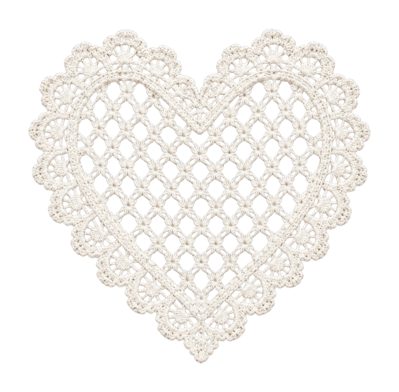

Hi, my name is Tayla Mustafa and I am a 19-year-old student studying Creative Computing. My experience in IT and Fine Art drew me towards Creative Computing. I love experimenting with new mediums, especially those that seem to contrast with each other, such as traditional art and technology.